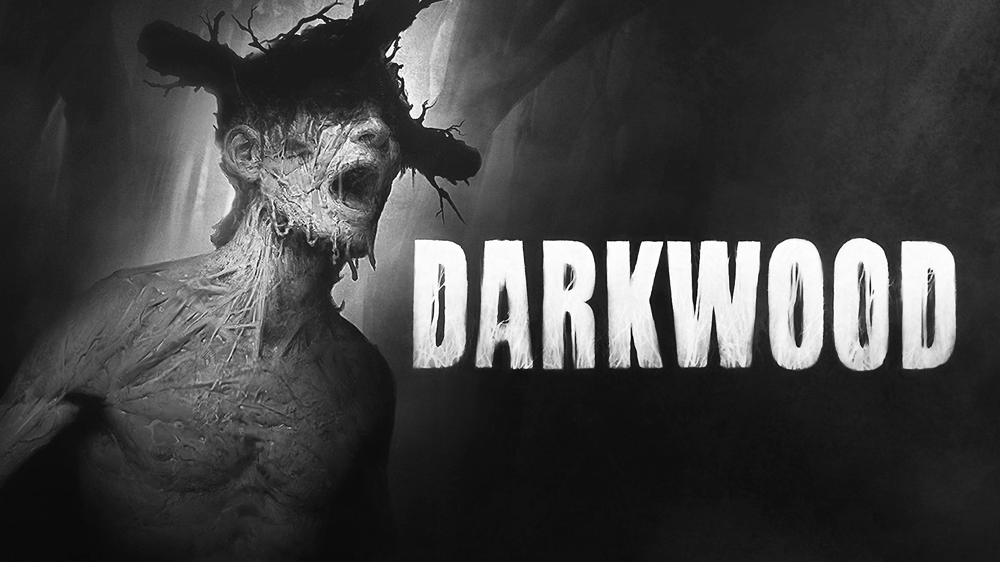
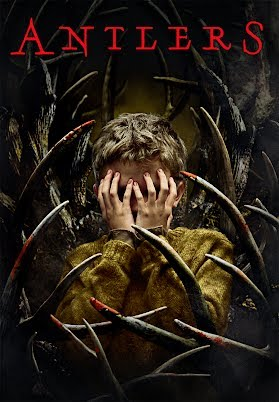
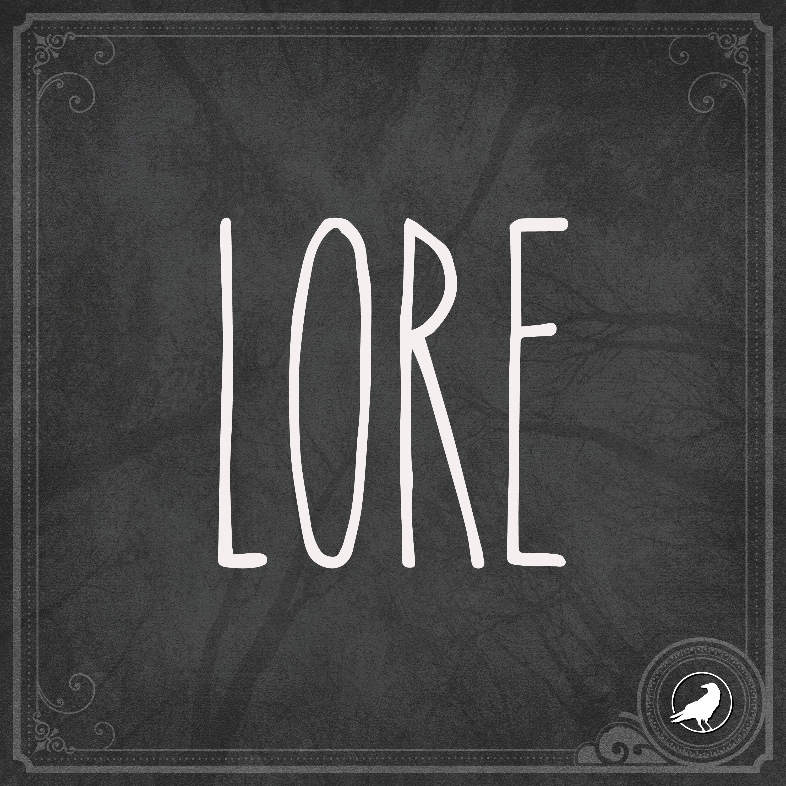

Semi-interactive short story
Inspired by ideas and folklore from narratives like
Darkwood
(Acid Wizard Studio)

Until Dawn
(Supermassive Games)

In a Dark, Dark Room
(Alvin Schwartz)

Antlers
(Scott Cooper)

LORE (18)
(Aaron Mahnke)
